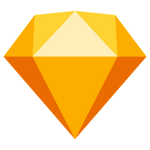
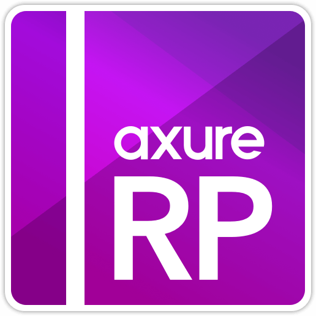

About Genie,Lu 關於盧仙萍
-UIUX DESIGHER-
設計師如果不懂程式，就無法持續進步
從計概開始讀起的設計師，至少在討論時不會因為不懂程式，而繪製不符合UI PATTERN的設計
3年以上UIUX設計師經驗，獨立完成許多專案也能與工程師及不同部門協力合作
每天定時閱讀各大設計社群，follow最新設計資訊並且時常參與UI/UX相關活動交流
除了設計相關的書籍，平日喜好涉獵心理學相關的書籍
興趣多元廣泛，從戶外的潛水、旅遊、登山到靜態的電影、烹飪、手工蠟燭、乾燥花...等
個人認為多數發了一個興趣，對於是世界的認知又多了一些，更能發揮各種風格
Skill




Experience
擁有豐富經歷，規劃及設計多筆知名企業UI及UX及網站互動動畫規劃師。
因接案碰觸過很多風格的設計，能自由變換風格
2019年06月friDay影音TV版本改版上線
2018年10月friDay影音大改版改版上線
2017年11月規劃知名銀行的點數平台設計及網站結構
2017年06月規劃企業打卡系統
2017年設計政大校訊網主視覺
2016年設計義大利美食教育中心網站視覺
2015年規劃了101CSR網站視覺設計及網站結構